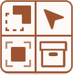

Capture Scope
1.0.4Capture Scope
By default a capture records and restores the entire scene. Scope lets you narrow that down.
Selected only — Only objects that are selected at the time of capture (or restore) are included. Everything else is untouched.
Specific objects — You pick a named list of objects. Only those objects are captured or restored, regardless of selection.
Specific collections — You pick one or more collections. Only objects inside those collections are included.
Exclude mode — Inverts the scope — the specified objects or collections are excluded, and everything else is included.

Scope applies to both capturing and restoring. You can capture a full scene and restore with a scope to only push changes onto certain objects, leaving the rest alone. This makes it possible to have overlapping captures that each “own” different parts of the scene.